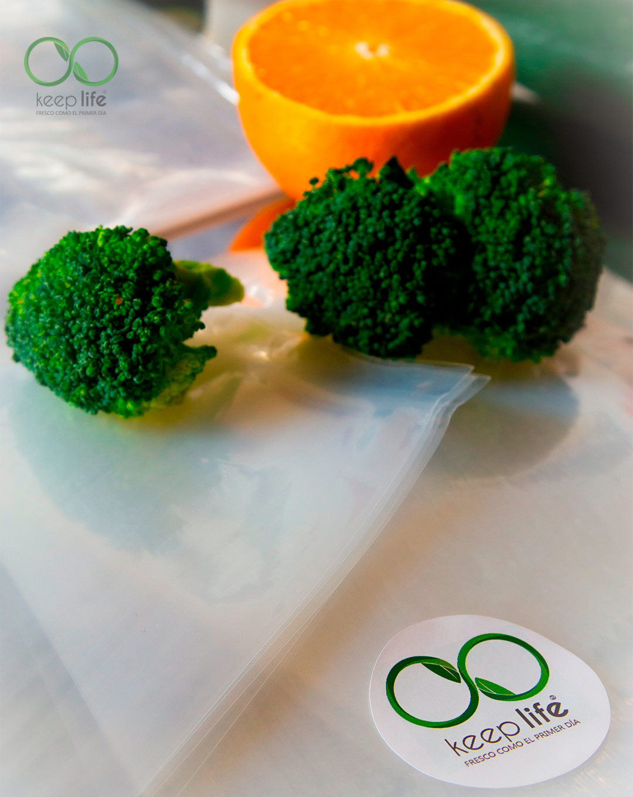

KEEP LIFE® Fresco como el primer día
Prolongá de 3 a 5 veces la vida útil de tus alimentos y productos. Fabricación nacional de bolsas lisas de alta barrera para máquinas a campana y rollos gofrados de 15 metros para uso doméstico.
Prolongá de 3 a 5 veces la vida útil de tus alimentos y productos. Fabricación nacional de bolsas lisas de alta barrera para máquinas a campana y rollos gofrados de 15 metros para uso doméstico.

Diseñamos y distribuimos la opción exacta según el tipo de equipamiento y volumen de producción.
 Uso Doméstico
Uso Doméstico
Diseñadas especialmente para envasadoras hogareñas o externas. Cuentan con un cuadriculado estriado frontal que canaliza la extracción de oxígeno sin pérdidas.
 Uso Profesional / Industrial
Uso Profesional / Industrial
La elección óptima para envasadoras profesionales a campana (sobremesa o pie) en frigoríficos, restaurantes, fábricas de pastas y productores de alimentos.
Tecnología e innovación que posicionan a un producto de fabricación nacional al nivel de las primeras marcas globales.
Nuestra formulación otorga una claridad cristalina insuperable que realza la frescura y presentación del alimento en góndola.
Costuras térmicas homogéneas y resistentes a tensiones mecánicas y bajas temperaturas de congelado, evitando el ingreso de aire.
Boca con labio desfasado estratégicamente para abrir e introducir el producto con máxima fluidez y rapidez en línea de producción.
Impresión institucional en hasta 4 colores en ambas caras. Reduce costos de etiquetado y potencia la identidad de tu negocio.
Al retardar la oxidación y eliminar el oxígeno residual (<1%), los alimentos se mantienen intactos de 3 a 5 veces más tiempo respecto a métodos convencionales.